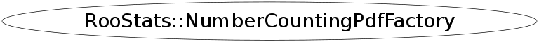

class RooStats::NumberCountingPdfFactory
A factory for building PDFs and data for a number counting combination. The factory produces a PDF for N channels with uncorrelated background uncertainty. Correlations can be added by extending this PDF with additional terms. The factory relates the signal in each channel to a master signal strength times the expected signal in each channel. Thus, the final test is performed on the master signal strength. This yields a more powerful test than letting signal in each channel be independent.
The problem has been studied in these references:
- http://arxiv.org/abs/physics/0511028
- http://arxiv.org/abs/physics/0702156
- http://cdsweb.cern.ch/record/1099969?ln=en
One can incorporate uncertainty on the expected signal by adding additional terms. For the future, perhaps this factory should be extended to include the efficiency terms automatically.
Function Members (Methods)
public:
| virtual | ~NumberCountingPdfFactory() |
| void | AddData(Double_t* mainMeas, Double_t* bkgMeas, Double_t* db, Int_t nbins, RooWorkspace* ws, const char* dsName = "NumberCountingData") |
| void | AddDataWithSideband(Double_t* mainMeas, Double_t* sideband, Double_t* tau, Int_t nbins, RooWorkspace* ws, const char* dsName = "ExpectedNumberCountingData") |
| void | AddExpData(Double_t* sigExp, Double_t* bkgExp, Double_t* db, Int_t nbins, RooWorkspace* ws, const char* dsName = "ExpectedNumberCountingData") |
| void | AddExpDataWithSideband(Double_t* sigExp, Double_t* bkgExp, Double_t* tau, Int_t nbins, RooWorkspace* ws, const char* dsName = "NumberCountingData") |
| void | AddModel(Double_t* sigExp, Int_t nchan, RooWorkspace* ws, const char* pdfName = "CombinedPdf", const char* masterSignalName = "masterSignal") |
| static TClass* | Class() |
| virtual TClass* | IsA() const |
| RooStats::NumberCountingPdfFactory | NumberCountingPdfFactory() |
| RooStats::NumberCountingPdfFactory | NumberCountingPdfFactory(const RooStats::NumberCountingPdfFactory&) |
| RooStats::NumberCountingPdfFactory& | operator=(const RooStats::NumberCountingPdfFactory&) |
| virtual void | ShowMembers(TMemberInspector& insp) |
| virtual void | Streamer(TBuffer& b) |
| void | StreamerNVirtual(TBuffer& b) |
private:
| RooRealVar* | SafeObservableCreation(RooWorkspace* ws, const char* varName, Double_t value) |
| RooRealVar* | SafeObservableCreation(RooWorkspace* ws, const char* varName, Double_t value, Double_t maximum) |
Class Charts
{kind=link}
{kind=link}
{kind=link}
{kind=link}

Function documentation
void AddModel(Double_t* sigExp, Int_t nchan, RooWorkspace* ws, const char* pdfName = "CombinedPdf", const char* masterSignalName = "masterSignal")
This method produces a PDF for N channels with uncorrelated background uncertainty. It relates the signal in each channel to a master signal strength times the expected signal in each channel. For the future, perhaps this method should be extended to include the efficiency terms automatically.
void AddExpData(Double_t* sigExp, Double_t* bkgExp, Double_t* db, Int_t nbins, RooWorkspace* ws, const char* dsName = "ExpectedNumberCountingData")
Arguements are an array of expected signal, expected background, and relative background uncertainty (eg. 0.1 for 10% uncertainty), and the number of channels.
void AddExpDataWithSideband(Double_t* sigExp, Double_t* bkgExp, Double_t* tau, Int_t nbins, RooWorkspace* ws, const char* dsName = "NumberCountingData")
Arguements are an array of expected signal, expected background, and relative ratio of background expected in the sideband to that expected in signal region, and the number of channels.
RooRealVar* SafeObservableCreation(RooWorkspace* ws, const char* varName, Double_t value)
need to be careful here that the range of observable in the dataset is consistent with the one in the workspace don't rescale unless necessary. If it is necessary, then rescale by x10 or a defined maximum.
RooRealVar* SafeObservableCreation(RooWorkspace* ws, const char* varName, Double_t value, Double_t maximum)
need to be careful here that the range of observable in the dataset is consistent with the one in the workspace don't rescale unless necessary. If it is necessary, then rescale by x10 or a defined maximum.
void AddData(Double_t* mainMeas, Double_t* bkgMeas, Double_t* db, Int_t nbins, RooWorkspace* ws, const char* dsName = "NumberCountingData")
Arguments are an array of results from a main measurement, a measured background, and relative background uncertainty (eg. 0.1 for 10% uncertainty), and the number of channels.
void AddDataWithSideband(Double_t* mainMeas, Double_t* sideband, Double_t* tau, Int_t nbins, RooWorkspace* ws, const char* dsName = "ExpectedNumberCountingData")
Arguements are an array of expected signal, expected background, and relative background uncertainty (eg. 0.1 for 10% uncertainty), and the number of channels.